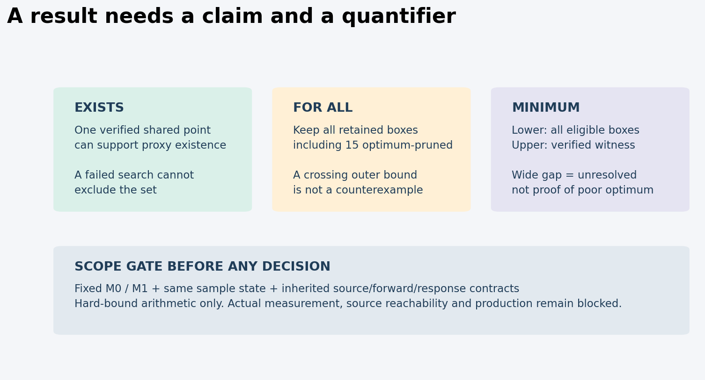
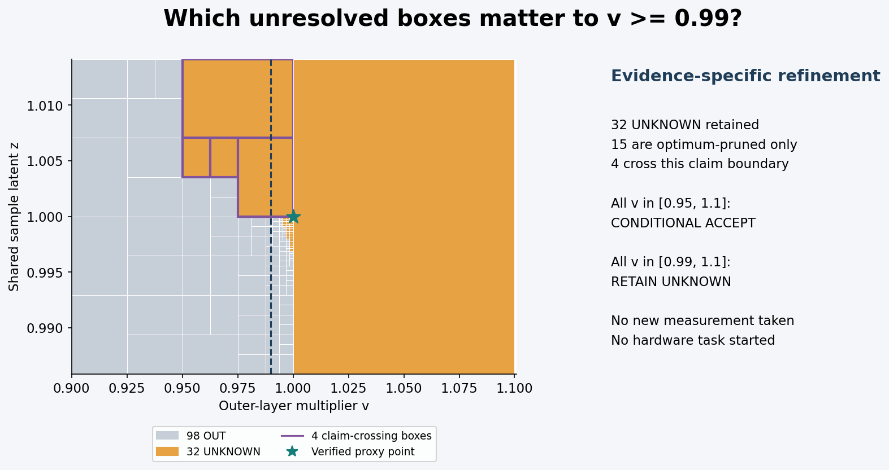
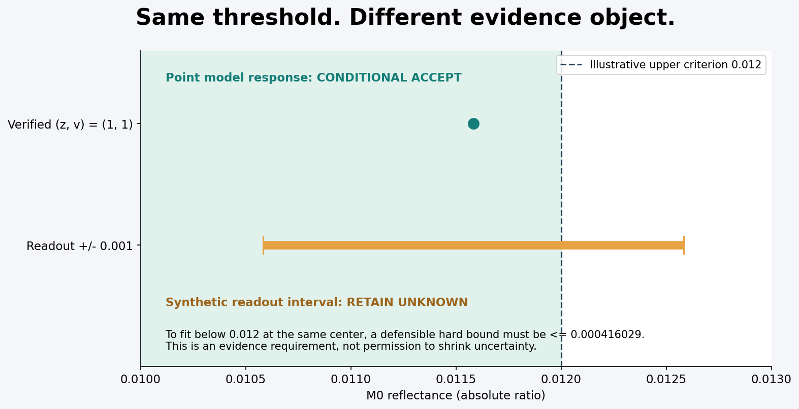
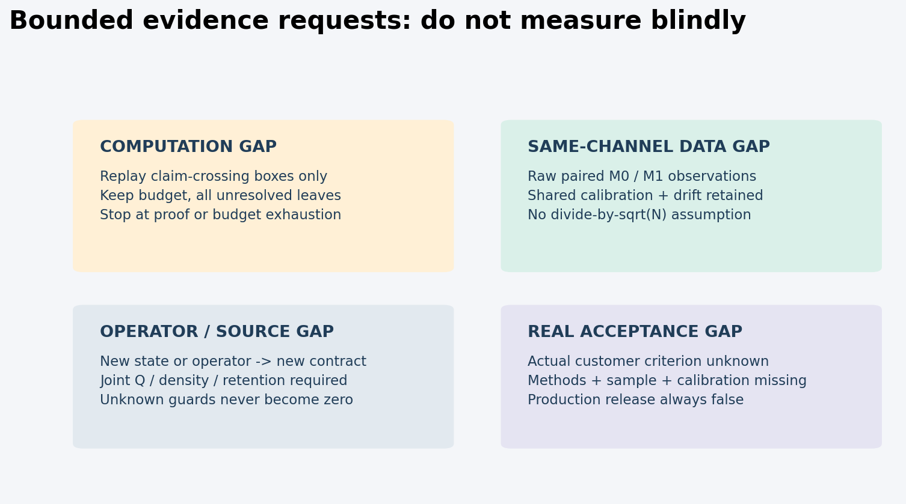

只在编码合成模型与项目例值下作条件判断。客户要求unknown；来源实现未证；正式模型链pending。PNG实际像素检查，HTML布局unverified。
把不确定结论读对




01 · 有限证据究竟允许说什么
1.1 本轮唯一问题
把T08R3预算化候选集合送入验收接口时，不能丢掉“对什么对象、用什么量词、在什么假设下”。本轮不再扩充通用schema，而把冻结的双通道六层合成例落到27个可执行主张。输出只表示研发证据对该主张的支持程度，绝不是客户或生产验收。
参考入口为README、cases/claims.json、models/acceptance.py和verification/tiny_final/results.json。原有T09R2的计量、校准、留出数据和预先决策规则要求继续有效；本轮新增的是从集合证据到用途的推理层。实际客户性能指标、被测件、规格、风险容许、仪器校准及授权都unknown；0.012、0.95和1.01等限值是说明规则的项目例值。
1.2 四个状态针对主张，不针对产品
| 状态 | 含义 | 不能据此做什么 |
|---|---|---|
| conditional_accept | 给定编码模型与合同内，已有充分证据支持该限定命题 | 不能宣称真实来源可达、物理正确或生产放行 |
| reject_claim | 已有反例，或完整覆盖证据排除了所声称的存在性 | 不能自动报废、返工或否定所有可能模型 |
| retain_unknown | 有效证据尚不能决定命题；给出具体未决盒或门槛 | 不能把UNKNOWN折叠成通过或不通过 |
| blocked_evidence | 对象、算子、来源、规则或概率语义不具备适用前提 | 不能把缺证解释为真实产品失败 |
任何返回值同时带production_release=false、physical_certification=false、customer_criteria=unknown、formal_stage_acceptance=pending。即使所有单元测试都通过，也不会改这些字段。
1.3 同一数据可以支持不同结果
一个验证点足以证明代理集合非空，却不能说明其余候选都满足性能；一个完整OUT切片能排除该切片，却不能排除相邻参数；32个UNKNOWN不妨碍证明整个可行集合位于较宽参数范围，但妨碍证明更紧的界。决定是否能用结果的，既不是“还有UNKNOWN吗”一个布尔值，也不是最小loss，而是本轮写清的主张。
最有工程意义的反差：名义(z,v)=(1,1)的M0预测小于0.012；同一合成读数的硬误差区间上端0.012583971却大于0.012。因此点模型响应的条件判断通过，而读数区间判断保持未知。更好的优化器不会消除这项观测信息差。
1.4 非目标与停止点
只用M0三节点加权反射与M1的10µm反射、同一个样品状态、同一正厚度外包络、同一六层合成起点。没有新增测量、改设备、37配方重优化、真实n/k拟合或无限维源反演。所有源Q、ρ、留存联合可达性仍未建立；point12 partial、point2 conditional non-strict、正式DeepSeek/Seed/Sol链pending保持。停止于local_freeze，不上传、不push、不执行T10。
02 · 固定证据链与可继承资格
2.1 链不能压成一个厚度中心
T05的finite-Lambert源归一化 → T06完整几何forward与有界响应 → T07材料/观测派生合同 → T08候选覆盖和见证 → 本轮主张。这条链的副本及每个依赖的SHA256都在data/frozen_dependencies.json。T08自身的96项依赖验证仍运行；本轮复制原代码和依赖，没有重写成一个“厚度均值±误差”。
Q_total定义为rim处理前半球总质量率；Q_intensity=Q_total/π只转换一次。继承证书限定编码浮点输入，不新增关于超越数π的严格物理证明。源时钟、pose偏移、事件项、密度/留存、库存、signed thickness change、梯度范围和材料状态均保留。hash确认字节绑定，不证明量值真实、来源合法或样品实际存在。
2.2 明确的双通道与样品状态
M0 = 1/4 R(4.25µm) + 1/2 R(4.26µm) + 1/4 R(4.27µm)；M1=R(10µm)。法向入射、δ角分布、半无限Ge代理基片、固定无损折射率和无散射均是合成定义。M0并非中心波长R(4.26µm)；M1不是整个8–12µm波段的合格证据。T=1−R在该无损算子内是确定关系，不是第二份独立测量。
两个合成中心为0.011583971和0.017070884，各带绝对反射比例0.001硬边界。它们不是仪器采集记录，也不是95%覆盖区间。0.001是0.1个百分点；代码使用比例单位1。误差联合域取边界的笛卡尔积，作为任何满足边际硬界的相关结构的安全外包络，不宣称统计独立。
六层及两通道共享一个z。不同候选各自存在其z，不能把一个候选的z拼到另一个候选。不同批次若无共同证据各用z_b。共享校准或样品状态相关性不能因通道波长不同而消失。
2.3 外包络蕴含只有一个方向
设S是有明确联合物理输入的真实可达来源集合，映射Φ(S)若已证明包含于Z外包络，则Z某子域OUT可排除其来源子集。反方向不成立：Z中的点满足光学观测，不保证存在一组共同Q、ρ、留存、时间、库存等输入实现它。真实Φ(S)及其联合域未知时，不能写source_exists=true。
用独立区间端点凑出不同层、不同通道各自的“可行值”尤其危险。存在一组共同源输入是联合命题；逐分量有区间值不是联合存在证明。
2.4 Guard、算子变更与失败传播
负净沉积、跨零、近零、库存、来源和状态unknown都不能填0或not_applicable。1e−15m是数值guard，不是成核厚度，也不说明新层在此阈值以上就成立。真实净侵蚀不属于本轮非负沉积/正厚度代理证书。
任何新谱点、角度、带宽、背面、温度、退火或样品状态都需要新观测/材料合同和hash。允许在未来说明这样的实验可能有价值，但本轮不能把它接到原M0/M1结果上。validator遇到state、channel或operator hash不符即blocked_evidence；真实测量和生产scope无条件阻止。
03 · 从覆盖集合到可执行命题
3.1 定义与完整性
在D=Z×[0.9,1.1]上，F={x=(z,v): 两通道H_i(x)落入Y_i且g(x)=zv−1.03≤0}。g是人为说明约束，不是生产公差；J(v)=((v−1.05)/0.05)²是设计偏好，不是似然。
经预算覆盖，保留集合U是所有data_class不为OUT且constraint_class不为VIOLATED的叶盒之并。F包含于U，但U中的点不必可行。数据IN和约束SATISFIED同时成立的区间点给代理存在见证。分割覆盖必须无空洞、重叠边界允许、无脱离树节点；根域、父合同和通道列表一起绑定。
3.2 三种量词不可混用
1. 存在性：只要一个经区间验证的共同点在F内，即可条件支持F非空。搜索没找到不否定存在性。若某指定切片的完整覆盖全为OUT，才能否定该切片内的存在性。
2. 全称性：欲证所有x∈F都满足q(x)∈A，需要对所有保留盒给出的q外包络均包含于A，并保留非空见证防止工程语义上的空集通过。一个验证点的q完全落在A之外可反驳；单个UNKNOWN盒的外界跨出A不是反例，只是待澄清。
3. 最优值：L≤min_F J≤U_best，其中L从所有数据保留且约束未违反盒得到，U_best来自共同可行见证。U_best≤t支持min J≤t；L>t反驳；其它未知。它没有证明所有可行点J≤t。
本实现以exact Fraction比较有理端点。输入限1024字符、分子分母4096bit；拒绝float、NaN、无界格式。区间端点相等采用闭区间语义。浮点只用于图形坐标，不参与接受判据。
3.3 15个目标剪枝仍有用途
当某盒J下界大于已知可行上界时，它可以不再竞争当前最优值。但该盒的数据类别没有因此改变。全称性能、来源候选或参数不确定域仍须保留该盒。在本例32个UNKNOWN中15个仅作目标剪枝，剩17个竞争最优；全称检查仍读32个。
删除15个目标剪枝盒不一定立即改变某一投影端点。本例删除前后v的凸包都恰为[0.95,1.1]，不能拿这一偶然相同来声称删除安全。叶盒集合已变，针对J或其它非线性量的全称证明仍可能错。代码从原leaves选数据保留集合，而不是从optimization.annotations中的RETAINED_FOR_OPTIMUM选集合。
3.4 gap不能倒用
可证上界G=U_best−L≤ε足以支持“当前见证有ε次优保证”。G>ε只说明此证据不够紧，不能断言真实误差大于ε。故gap_le在界太宽时retain_unknown，不是reject_claim。实际最优点可能尚未发现，也可能早已接近当前见证。现有L=0、U_best约1，不能称全球最优或唯一解。
3.5 算术与物理两重条件
arithmetical containment仅在编码合成模型内成立，软件实现未形式化验证，正式模型链未签署。有限含界与可复现检查比浮点搜索更强，但不能替代实验模型验证。condition_accept必须携带这些条件，不能在另一个表格中简化为绿色“合格”。
04 · 具体冻结结果的判据表
本章结果来自verification/tiny_final/results.json。覆盖/见证hash与T08冻结记录完全一致，且是进程内重新screen/validate_point得到，未把保存JSON注册成证书。
| 明确主张 | 判定 | 直接证据或剩余缺口 |
|---|---|---|
| F中存在一个代理点 | 条件接受 | (1,1)在双通道IN且g≤0；不证明来源实现 |
| v=1.1存在兼容z | 拒绝此主张 | 完整Z切片13个节点、7个OUT叶，零UNKNOWN |
| 所有支持解v∈[0.95,1.1] | 条件接受 | 全部32个保留盒的v外包络包含于该闭区间，有非空见证 |
| 所有支持解v∈[0.99,1.1] | 保留UNKNOWN | 4个保留盒跨下限；无验证反例 |
| 所有支持解v∈[1.01,1.1] | 拒绝此主张 | 验证点v=1是反例 |
| min J≤1.01 | 条件接受 | 验证见证的J向外上界小于1.01 |
| min J≤0.25 | 保留UNKNOWN | 0到约1的包络跨门槛 |
| min J≤−0.01 | 拒绝此主张 | 可信下界0大于−0.01 |
| 当前见证gap≤0.05 | 保留UNKNOWN | 可证gap上界约1；不能用宽界反证真实gap |
| 所有支持解J≤1.01 | 保留UNKNOWN | 31个数据保留盒跨界；最优值上界不可替代全称界 |
| 搜索未找到意味着F为空 | 拒绝此主张 | 一次有限失败搜索没有排除力，且存在验证反例 |
| 代理IN意味着可制造真实来源存在 | 证据阻断 | 联合Q/ρ/留存/状态/库存来源合同未建立 |
4.1 同一门槛的两种对象
模型点M0的区间约为0.011583971201202034，完整有理端点保存在输出；在[0,0.012]内，因此point_M0_in条件接受。这个命题仅是给定模型和坐标的前向响应，不是样品测量。
合成读数Y0=[0.010583971,0.012583971]。用同一项目区间规则：上限0.013时完全包含，条件接受；上限0.010时完全不相交，拒绝该合成读数判定主张；上限0.012时跨界，保留UNKNOWN。该表使用硬边界，不给错误接受概率。实际测量scope在进入比较前就blocked_evidence。
模型拟合利用了构造中心；它不提供新的独立测量。以模型点通过来压低观测U、删掉首测或代替客户限值，会把模型假设反喂成数据证据。
4.2 边界v=1.1为何投影还保留
二维粗覆盖的UNKNOWN盒可接触v=1.1，故其保守投影上界仍为1.1；更细的一维切片证据已排除v=1.1。这不矛盾。严格集合可以移除此切片，但仍不能凭一个端点排除得到1.099之类数值上界，更不能以绘图分辨率消去邻域。validator保守地维持原二维包络，只对被完整重放的精确切片作拒绝。
4.3 停止原因是证据，不是失败补丁
联合域255节点得到98 OUT、0 IN、32 UNKNOWN；区间点另行验证。UNKNOWN来自宽度和预算状态，并不说明每个盒都真有解。原故意单次有限搜索失败日志保留，仅作诊断对照。本轮没有重启搜索直到找到有利答案，也没有借新增CPU改变材料、源或校准unknown。
05 · 有限补证：先解决哪一种缺口
5.1 主张驱动，避免无边界补测
本轮不下发设备任务。data/evidence_requests.json把每个不足映射为有限的交付对象、进入条件和停止条件；每个输出引用REQ编号。只有客户选择主张与真实测量对象后，才有实际验收的补测范围。模型计算优先与测量优先不能由“有UNKNOWN”一个词决定。
对all_v∈[0.99,1.1]，先保存4个跨界盒的exact坐标和完整状态，未来在原双通道合同内预算化细分这些盒。它们是可能影响该命题的计算域，不是四个独立物理样品。已有安全盒不需要为这条主张重复计算；15个目标剪枝中若有跨该主张门槛的盒仍不得跳过。
对all_J≤1.01，有31个跨界盒；对minJ≤0.25，应优先消除优化放松下界和寻找验证见证，不把前一任务的全称筛选集冒充后一任务。优先级是复用可证明的相关性，不是把计算最难的盒静默删掉。完整heavy计划仅记8191节点/32768单波长核的固定上限，不实现执行开关。
5.2 同通道读数不足的定量需求
若未来仍以当前同一读数中心0.011583971和同一上限0.012作说明，欲按完全包含规则接受，新的合法硬误差上界必须≤0.000416029。当前界0.001不满足。这只是条件算式0.012−中心，不是仪器应达到的精度保证，也不是允许把U改小的命令；新的中心可能改变，真实U也不一定是硬界。
本轮给一份有限“同状态、同M0/M1、配对读数”请求模板：保留未舍入原始输出、暗/参考/空白、单位与光路配置、时间顺序、校准适用域、共享校准/漂移项及不确定度方法；先约定一次有限采集会话和数据合并规则，具体重复数由所需精度、相关项和方法决定，当前unknown。所有首测、失效和偏離仍保留。禁止测到通过为止。
若测量误差含公共偏置b和独立项ε，重复均值不会消除b；重复次数N不能授权把整个0.001除以√N。当前两通道是同样品共享z，边际硬界的笛卡尔积无统计独立前提。实际相关模型未知则继续保留保守外域，不伪造协方差为零。
5.3 算子或模型不适用不能由重复解决
若真实元件有背面、散射、角展宽、退火或不同温度，先建立新算子/状态合同、保留旧版本并验证桥接。重复旧算子读数不能证明新对象。新波长/新角度或新材料域属于下一份合同，本轮不实施，也不能在现有hash下追加一列数据。
真实来源可达性需要共同的Q、ρ、留存/侵蚀、库存与时序域及映射证据。分别给“密度合理”“Q范围合理”不足以证明联合见证；如果真实n/k或材料身份未知，需先关闭这些缺口而非猜数。源问题的响应应是REQ-SOURCE，不是盲目新增光谱点。
5.4 可停止的补证流程
每次请求固定：目标命题、原始证据、允许的合同变化、计划上限、失败保留规则、一个有限交付记录、何时停止。若合同/样品不符，立即blocked；若预算结束且未决，交回UNKNOWN及剩余集合；若有效证据足够支持或反驳指定主张，停止该研究检查。没有默认再测、加预算或进入设备排程的循环。
06 · 现行依据与条款可用范围
检索日期2026-10-02。只核对当前问题所需的主来源，不再复制全套标准目录。sources/source_registry.json记录来源、定位、访问层级及限制；无第三方全文分发。
6.1 测量符合性框架
JCGM106:2012的§3.3、§8及§9区分规格、接受区间和决策风险。本轮只借用这一边界：规则须绑定已规定要求和测量信息。本文集合量词、四状态和0.012例值是原创项目规则，不是JCGM指定的镀膜阈值。硬算术包含不能自动转成覆盖概率或批风险。
Global ACI-TECH-1-002(G)v1.0_Guidelines_on_Decision_Rules_and_Statements_of_Conformity_v1_0.pdf)封面及官方目录均列2026-06-26发布与实施。其§3.3、§3.6–3.7及附录A给出ISO/IEC17025有关需求约定、决策规则与报告对象的指导性引述。这里仅转述：应明确结果、要求与所用规则，并记录适用风险和假设；未声称本轮取得17025全文或完成认可审查。
ISO/IEC17025:2017官方目录显示第3版，2023年复审确认仍现行；付费全文未取得。不因网络摘要而编写它的完整受控程序。actual_customer_criteria仍unknown，不能用通用标准名代替客户规格。
6.2 相关性与光学方法边界
GUM JCGM100:2008 §5.2说明显著相关输入需要保留相关影响。该节核查位置为印刷pp21–23/PDFpp33–35；本轮不把一阶传播扩为强非线性的覆盖保证，也不做2026修订的替代实施。共享校准下“增加重复不消除公共项”在本项目只作代数说明，当前合成例仍用硬集合。
ISO15368:2021官方目录明确针对平面表面的规则反射与平行平板的规则透射测量，排除漫射测量。完整付费方法未取得；本轮既不编造其条款参数，也不宣称该模型的半无限基底透射等同有限成品外透射。
6.3 来源与项目规则分开存
来源目录每项以primary_public_fulltext_selected_sections或official_catalogue_only标记。对网页/PDF已读部分仅存原创短摘要及精确定位，不嵌入原文、截图或PDF。来源现行性是访问当日观察，不是客户已经接受该版标准的证明。没有买标准、接受新合同、登录账户或外部共享。
规则与来源的关系表data/rule_source_map.csv将每条判据标成project_rule、inherited_model_contract或external_framework。外部框架支持“须明确对象与规则”；它不提供T08的数值，也不为该数值算法背书。
07 · 参考实现、重放与预算
7.1 双入口，避免保存文件取得权威
models/reader.py是离线字节/依赖/本地链接检查器，不调用优化器。它可以检查归档内记录与manifest匹配，但不证明数值结论正确。models/acceptance.py的evaluate只接受本进程replay_tiny创建并保持payload摘要不变的Session；手工Session或由JSON反序列化得到的对象拒绝。每次调用还对payload做内容指纹检查，防止重放后将UNKNOWN改成OUT。
replay_tiny逐一校验复制依赖、加载固定合同、重放双通道255节点、v=1.1切片最多31节点与(1,1)点。完整screen覆盖和witness经原API在本进程登记后，才调用optimize_bounds。保存结果仅用作fingerprint对照，从不直接传入优化API注册。进程内登记防误用，不是抗恶意Python代码或数字签名认证。
7.2 精确运行边界
driver默认plan_only，只打印计划；唯一执行选项tiny，要求新输出目录。显式cap为286节点、1148单波长包含调用、0浮点向量。实际每次tiny重放为268节点、977次包含核、0浮点搜索，无fallback。全计划/设备/多批/37配方都未执行，配額未绕过。
首次24主张replay、补入读数区别后的27主张final replay、单元测试共三次tiny重放，各自有记录；总调用不能只报告最后一次。verification/execution_history.json汇总三次实际重放与廉价静态/规则检查。修改报告、图形和reader不重新运行光学模型。
7.3 检查所覆盖的风险
27个案例含存在性、精确OUT切片、全称宽界/窄界/验证反例、min-J、gap、优化器失败、点响应/读数差别，以及真实用途、新状态、新算子、独立层、伪√N、不当概率化、unknown guard、猜客户规格和全谱过度结论。12项单元测试另覆盖反序列化对象、修改Session、目标剪枝保留、端点等号、float/NaN/反向区间输入等。
程序不会认证校准证书、判定照片真假、核实签名、估计真实协方差、生成真实覆盖概率或确定实际来源可达性。输入声明格式正确不等于科学事实成立；真实用途被限定scope gate阻止。
7.4 可移植读者和复现
解压reader包后，在包根运行：python models/reader.py。该操作不需要网络、浏览器或相邻T08目录。若要重新计算，则python models/driver.py --mode tiny --output verification/my_replay；这是新证据目录，故会被原精确manifest报告为extra，不能把带新结果的目录冒称原冻结包。建议在独立工作副本运行并单独保存新收据。
标准库即能运行核心逻辑；图形重建需要matplotlib，仅作离线原创图。reader.html没有script、iframe、远程字体或外部图像。PNG实际像素另审；HTML静态链接/结构可核，布局unverified，未重试受限headless/socket路径。
08 · 有限验收、冻结与后续边界
8.1 可以验收的是本地研究交付物
验收对象为原创报告、明确主张、源账本、可运行reference validator及cases、独立reader、复制依赖、静态图与准确运行记录。通过本地测试表示这些声明在该实现与合成输入上按预期工作。它没有完成正式算法阶段签署，也不能替代实验室能力、真实计量或生产质量体系。
本轮仅安排一次配置为GPT-6 Luna的窄规则/单位独立检查（底层实际模型标识未另核）；实际发现与作者回应保存在reviews。DeepSeek执行、Seed Pro阶段审查、Sol完整算法审查均未完成。任何local_freeze或文件pass不得重写formal_stage_acceptance=pending。point12 partial与point2 conditional non-strict原样继承。
8.2 精确文件集与两层收据
reader_manifest精确列举可分发payload的相对路径、字节数与SHA256，验证missing/changed/extra。包含114项复制依赖，独立解压后复核其相同hash，不向上查找相邻源目录。manifest自身及最终收据为避免自引用不列自身hash；收据绑定manifest和zip的hash。控制文件排除集合写入reader.py，不能依靠glob忽略任意新增文件。
zip仅包括manifest列举的payload及manifest；不含目录外baseline、第三方原件、缓存、内部消息或工具标识。解压验证同时检查文件集和链接。另有篡改单字节、缺文件、增文件、依赖复制异常的负例检查；这些是字节完整性检查，不是可信时间戳、签章或供应链真实性。
8.3 外围不可变性与视觉状态
开工前采集研究库目录外2394个文件的byte/hash基线；冻结时比较既有文件和新增文件。只应出现本目录变化；并行任务若有变化需如实列出，不重置基线抹掉差异。不修改root plans、旧冻结、product或设备文件。
原创图包括量词/状态流、主张对应的4盒细化域、同一0.012阈值下点模型与合成读数差别、有限请求路由。PNG需实际像素查看，记录不等同于HTML已渲染。HTML布局保持unverified，不反复尝试已受限的socket/headless浏览器。
8.4 T10仅有界交接
若后续研究离子源，先将其能量/角度/电流/中和/时序证据映射到已有response/状态合同及guard；未知项仍unknown。不得把本轮光学proxy IN升级为离子作用或沉积净厚度已验证，也不得默认用户有某设备。T10建议只研究有限接口与证据缺口，不自动运行设备、开新谱/状态或触发大型模型。
此目录以精确收据和local_freeze结束。没有push、upload、deploy、生产发布或下一题启动。
一手来源与访问边界
- UA-S01 · JCGM 106:2012
§3.3; §§8.1–8.3; §9
规格、接受区间与风险分开；不将数值集合解释为概率。
项目的四状态/量词/数值限值不是本标准规定 - UA-S02 · Global ACI-TECH-1-002(G), v1.0
cover; §§3.3,3.6–3.7; Appendix A, PDF pp6–7,18
2026-06-26发布/实施；指导中引述结果、规格和决策规则的报告要求。
不是ISO/IEC17025授权全文；不声称实验室认可 - UA-S03 · Global ACI current documents
TECH-1-002 entry
当日目录列TECH-1-002，日期2026-06-26。
目录现行不证明客户合同采用 - UA-S04 · ISO/IEC 17025:2017
edition, publication and review confirmation
第3版，2023复审确认；目录表明仍现行。
付费全文未取得；不编造完整条款和受控程序 - UA-S05 · JCGM 100:2008
§§5.2.1–5.2.5; printed pp21–23, PDF pp33–35
相关输入和共享影响需保留；重复不能被自动等同独立信息。
本轮不进行GUM覆盖验证或强非线性传播；2026修订不在本轮实施范围 - UA-S06 · ISO 15368:2021
Abstract and general information
规则反射/规则透射，适用无光焦度平面/平行样件。
付费全文未取得；不能外推漫射或替代真实成品光路
证据与参考实现
- cases/claims.json
- verification/tiny_final/results.json
- verification/unit_tests.txt
- data/evidence_requests.json
- data/frozen_dependencies.json
- reviews/narrow_independent_check.md
- reviews/AUTHOR_ACCEPTANCE.md
- stage_status.json
- models/reader.py
- models/driver.py
- T10_ROUND3_HANDOFF.md
核心验证无需网络、浏览器或相邻目录。只有明确tiny执行才重放数值；默认plan_only。